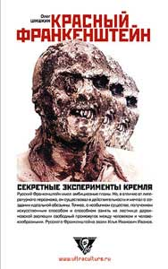

Олег Шишкин • Красный Франкенштейн • non-fiction • 11.09.2003

Сенсационное историческое исследование Олега Шишкина посвящено секретным медицинским экспериментам 20-х годов. После смерти Ленина большевистская элита заинтересовалась сначала особенностями устройства мозга вождя, а потом поставила перед учеными задачу преодолеть человеческое старение и создать гибрид человека и шимпанзе. В новом свете Шишкин показывает многих политических и научных знаменитостей той эпохи. Особую актуальность книга получает на фоне современных дискуссий о моральности клонирования.
Пресса
Олег Тюлькин. Фантастический звереныш, Рецензия на «Красного Франкенштейна» Шишкина
Всем давно известно, что булгаковское «Собачье сердце» – не банальная футурологическая фантазия. Тема, что называется, висела в воздухе, газеты 20-х годов регулярно сообщали о невиданных прорывах молодой советской науки, а операция по пересадке обезьяньих желез вообще была модной в кругах официозной богемы и большевистской номенклатуры. Считалось, что яичники шимпанзе продляют молодость и добавляют сексуальной энергии. Так что Шариков должен был вот-вот появиться. Причем не в пространстве литературного текста от Михаила Булгакова, а в научной лаборатории…
Профессор Преображенский, в итоге, остался очень недовольным своим детищем. Но, в конце концов, он ведь сам его породил, – резонно парирует московский архивист Олег Шишкин, автор ряда сенсационных расследований («Битва за Гималаи», «Убить Распутина»). В сентябре на книжных прилавках появился его новый документальный триллер – «Красный Франкенштейн» (Москва, «Ультра.Культура», 2003 г.), эдакое «Собачье сердце» наоборот.
«Я не могу поспеть вослед
Могучей поступи всепобеждающего класса.
Но, отдавая все, шлю пламенный привет
Тебе, грядущий человек всемирной новой расы!»
Такие стишки восторженный аноним отправил наркому Луначарскому. Грядущего нового человека действительно ждали. Ждали, затаив дыхание, жадно вылавливали крупицы информации, просачивающиеся в газеты и научно-популярные журналы. 20-е годы минувшего столетия, – вероятно, самый безумный и авангардный период отечественной истории. Забальзамированный Ленин, Мавзолей, построенный в соответствие с пропорциями египетской пирамиды, проект башни Татлина… Однако, архивные изыскания могут преподнести еще массу сюрпризов. Таких, что «Остров доктора Моро» или хирургические сплаттеры от Брайна Юзны (цикл фильмов о «Реаниматоре») покажутся невнятной детской сказочкой. Большевикам было мало строительства небывалого государства, они стремились создать еще и человека, достойного по их мнению, новой системы. Человека взялся создавать скромный зоотехник с ничем не примечательной фамилией Иванов…
«Илья Иванович не был похож ни на сумасшедшего, ни на афериста, решившего погреть руки на наивных материалистах, – утверждает Шишкин. – Внешне он чрезвычайно напоминал сказочного доктора Айболита, несущего исцеление больным зверушкам. Он действительно искал средства от некоторых болезней домашнего скота, но, кроме того, уже много лет профессор Иванов занимался искусственным оплодотворением животных методом зоотехнии. Природа представлялась Иванову в виде детского конструктора, обладающего неограниченными возможностями для человека с дерзкими мечтами. Искусственное осеменение позволяло уподобиться Богу, и такое подобие не могло не вдохновлять».
Новую особь собрались произвести на свет в результате скрещивания человека и обезьяны. Идея не была личной блажью профессора Иванова, за результатами эксперимента внимательно наблюдали из Кремля. Мораль? О морали особо не задумывались. Какая мораль, какая нравственность, когда можно бросить дерзкий вызов природе? Ведь даже всемирно известный Николай Вавилов решился в те годы на такое утверждение: «Генетик должен действовать, как инженер. Он не только обязан изучать строительный материал, но он должен и может строить новые виды живых организмов (курсив мой – О.Т.)». А изданная в 1926-м году Большая Советская Энциклопедия содержала новый, неизвестный доселе термин «антропотехника», который расшифровывался, как «прикладная отрасль биологии, ставящая своей задачей улучшение физических и духовных качеств человека путем тех же методов, которые использует зоотехника при улучшении или выведении новых пород домашних животных». «Все эти монологи опьяняли Илью Ивановича, – пишет скандальный архивист Олег Шишкин. – Он уже представлял себя кем-то вроде родоначальника новой расы существ, которые в будущем вполне могли стать основным населением Земли. Если, конечно, с помощью генетики можно будет взять у обеих сторон революционной гибридизации лучшие черты наследственности: изощренный человеческий ум и несокрушимую силу обезьяньих мускулов». В руках профессора Иванова оказались все козыри, все возможности и практически неограниченные финансы.
Однако процесс создания новой биологической особи был сложен и тернист. Поездки в Европу, экспедиции в Африку, неудавшееся путешествие на Кубу – в «Красном Франкенштейне» подробно описаны все этапы «большого пути», поэтому останавливаться на частностях мы не станем. Скажем лишь, что в конечном итоге именно проблема скрещивания обезьяны с человеком подвигла научные и власть прeдержащие круги юной Советской республики на создание знаменитого Сухумского обезьяньего питомника. Именно здесь и проводились судьбоносные эксперименты. По иронии судьбы, по соседству с сухумским питомником находилась… психиатрическая лечебница и холодный пот прошибал туристов, когда они, выйдя из вольеров с обезьянами, слышали очень похожие крики, но только от своих бывших собратьев по разуму. Парадокс, злой рок, цинизм или все то же авангардистское безумие разместило рядом запредельную человеческую фантазию и тех, у кого помутился рассудок?.. «История – это поучительный урок жестокого анонимного педагога». С таким утверждением Олега Шишкина трудно не согласиться.
Но работа тем временем уже кипела вовсю. Профессор Иванов бесстрастно фиксирует в своем дневнике: «Каждой обезьяне впрыснуто около 1 кубического сантиметра спермы. Впрыскивание делалось под видом лечения и происходило при очень неудобных условиях. Обезьяна, стянутая сеткой, вытягивалась наполовину из дверцы клетки. Впрыскивание в шейку матки при этих условиях было невозможно…» В качестве биологического материала он даже был готов использовать сперму собственного сына, а, возможно, что использовал – история и Олег Шишкин умалчивают об этом. Зато не скрывают другого: «Здесь, в Советской России оказалось значительно проще найти желающих принять участие в историческом эксперименте. Простые русские мужики и бабы готовы были пойти на отчаянные жертвы, лишь бы уесть Бога (курсив мой – О.Т.). Газеты тех лет сообщали о целом движении, возникавшем на базе идей Иванова». Есть и более пикантные намеки: «Возле вольер с антропоидами поселились и их близкие родственницы, которых в документах обезьянника именовали как «сотрудниц особого назначения». Самцы шимпанзе, которые должны были стать отцами будущего приплода, возбудили у девушек неподдельный интерес…».
«Что же все-таки произошло? Получилось или нет?» – спросит нетерпеливый читатель. Получилось – как раз в духе наступавших тридцатых годов. Добрый доктор Айболит, он же профессор Илья Иванович Иванов «за помощь международной буржуазии в осуществлении враждебной деятельности против СССР» был осужден на пять лет с последующей заменой тюремного заключения на высылку в Казахстан. В марте 1932-го он умер от кровоизлияния в мозг…
«В тиши передовой научной лаборатории мог состояться великий триумф ученого, когда он, окруженный пальмовыми ветвями славы, вынесет из родильного отделения фантастического звереныша, чтобы явить его потрясенному научному миру». Но нетерпеливые кремлевские боссы очень торопились, им некогда было ждать, а потому не простили престарелому Иванову его теоретических и практических неудач.
Хотя… Есть данные, что фантастический звереныш все-таки появился на свет и прожил до 1946-го или 1947-го года. Не все архивы открыты, не все документы рассекречены, так что будем ждать новых, леденящих кровь, подробностей и сенсаций.
Владимир Березин. Межвидовое скрещивание. Рецензия на «Красного Франкенштейна» Шишкина
В известном фильме «Люди в черном» есть хороший эпизод, когда один из персонажей произносит:
– А теперь посмотрим сводки… – и начинает рыться на лотке с бульварной прессой. – Это самые точные сводки, да.
Так и здесь, ведь пунктир этой книги – смерть Ленина – смерть Фрунзе – разработка отравляющих веществ в СССР – опыты Иванова с обезьянами. Это все те темы, что были заявлены крупными буквами в огромном количестве журналов и газет. Все это можно было найти на каждом углу и на каждом вокзале.
И что ж? Страшно умирал Ленин. Страшно. И про это уже снят известный фильм. И Фрунзе, поди, убили. Про это писатель Пильняк даже книжку написал. Да и про опыты с собаками есть книжка – о реликтовом профессоре, его ассистенте и собаке, подобранной в подворотне.
Секретные эксперименты – это только разработка боевых отравляющих веществ, что, конечно, ни в какие времена открытой тематикой не было. А вот попытки скрестить человека и обезьяну, да и прочие эпизоды книги если уж были каким секретом, то только секретом Полишинеля. Советская и мировая пресса трубила о них на каждом углу. Поэтому не очень понятно, зачем автор завершает книгу словами: «Но если мы когда-нибудь получим документальное подтверждение сенсационному событию, это будет означать только то, что один из самых принципиальных шагов по изменению цивилизации прошел для нас незамеченным. Он назывался “секретным экспериментом”. И абсолютно не важно, стояли ли у дверей той роковой лаборатории наряды НКВД или караулы спецназа – все это мелочи. Роковой шаг уже будет сделан в прошлом». Ну, «будет – в прошлом». Контрамоция в журналистике. Или публицистике.
Пафоса тут никакого – тема давно обсосана, куда важнее ее этический аспект, который нам знаком еще по переведенной книге француза Веркора «Люди или животные». Там, собственно, мелодраматический сюжет был закручен вокруг судебного разбирательства – убит ли человеческий дитеныш, рожденный от квази-обезьяны, или убит дитеныш обезьяны. Тема эта обычна, разжевана и пережевана не в газетах, а в романах, как мы видим.
А в этой работе Олега Шишкина интересно другое – подробный пересказ архивного дела (ГАРФ, ф. 3316, оп. 45, д.18), на котором, собственно, и построено полкниги. На этом спасибо. Не каждый попрется в архив читать первоисточник.
Таким образом, это межвидовое скрещивание – бульварной спекулятивной темы и спокойного изложения с развешенными ссылочками. Если бы не доля известного пафоса – совсем было бы хорошо. Если бы рассказать о том, почему межвидовое скрещивание невозможно, рассказать об обреченности социальных утопий, только отразившихся в зеркальце смешной пародии на дарвинизм… Если бы в этой книге еще рассказать об очень интересном феномене советской евгеники, то есть объяснить читателю, что главная фишка совсем не в секретности этих опытов, а в том, что они были совершенно естественны для двадцатых годов прошлого века, что собачье сердце колотилось не в одной груди, и даже Маяковский молил в своих стихах безвестного физика о бессмертии… Ну, это было бы просто замечательно.
Игорь Лукьянов :: Рецензия на «Красного Франкенштейна» Шишкина :: Ваш досуг #45
Бум такой литературы был на пороге 90-х годов. Сегодня ее публицистичность отдает дурным вкусом “желтой прессы”, но уж больно материал колоритный и скандальный. Многие что-то слышали или читали о попытках скрестить человека с обезьяной, о пересадке людям обезьяньих половых желез, об институте мозга и экспериментах над людьми, проводившимися нацистскими и советскими “убийцами в белых халатах”. Шишкин попытался во всем этом разобраться и раскопал потрясающие факты. О том, как мозг Ленина чуть не отправили в Берлин. Или историю авантюриста, ученика Мечникова и основателя Сухумского обезьяньего питомника, который в дикой Африке не смог найти желающих родить от шимпанзе, но зато нашел обилие таких добровольцев на родине. Опыт не удался, и его посадили – это факт. Но боже, что творилось в головах ученых того времени и их современников! Таких, как “положительный” герой “Собачьего сердца”: “Это ведь именно Преображенский создал монстра Шарикова, а Советская власть его только крестила и вскармливала”.
Иван Поликарпов. Горячее обезьянье сердце (Exlibris)
К началу ХХ века основной интеллектуально-научный потенциал человечества был сосредоточен в руках представителей того, что теперь принято гадковато называть “иудеохристианской цивилизацией”. И хотя уже тогда идеалы гуманизма были поколеблены образцово-передовыми кошмарами Первой империалистической, рвение неугомонных паганелей сдерживалось определенными этическими нормами. Но тут неожиданно на 1/6 суши “революция все изменила”. Большевики взяли себе абсолютный карт-бланш: страна была ввергнута в пучину бесконечных экспериментов – социальных, идеологических, научных. Биология, конечно, не осталась в стороне – щелкала зубами опутанная трубками собачья голова без тела, курица превращалась под скальпелем хирурга в петуха, а над “венцом творения” завис дамоклов меч глобальных евгенических мероприятий.
Один из эпизодов этого эпического натиска на Природу лег в основу новой книги Олега Шишкина, автора небезызвестного исследования об оккультных течениях внутри НКВД (“Битва за Гималаи. НКВД: магия и шпионаж”). В 20-х годах биолог Илья Иванович Иванов поставил своей целью скрестить человека с обезьяной, для чего и был создан знаменитый Сухумский обезьянник. Вообще интерес советского руководства к человекообразным обезьянам объяснялся в основном перспективами трансплантации их половых желез с целью омоложения (да-да, то самое булгаковское “я пересажу вам яичники”). Однако для самого Иванова главной задачей было практическое доказательство дарвинской теории путем искусственного получения пресловутого “утерянного звена” между обезьяной и человеком.
Шишкин не удерживается от сарказма в духе “Собачьего сердца” – вот, мол, решили вырастить строителя коммунизма себе под стать, хотя вполне возможен и иной взгляд: зверушек потихоньку начали подтягивать к коммунизму. И правда, если бы грань между животными и человеком была бы решительно стерта, наши меньшие братья тоже по логике должны были бы скинуть многовековое ярмо эксплуатации и получить свою долю социальной справедливости. Именно этого, кстати, справедливо опасался буржуазный прихвостень Оруэлл со своим мерзковатым пасквилем о скотном дворе. Вообще сложно представить, перед какими этическими, правовыми и богословскими проблемами было бы поставлено человечество в случае успеха эксперимента.
Впрочем, похоже, что все еще впереди: описанная ситуация повторяется – наука снова выходит из-под контроля традиционной европейской морали, во второй половине ушедшего века резко выдвинулись вперед азиатские державы с иным пониманием гуманизма, доступ к новейшим технологиям получили различные секты со своеобразными теологиями (вспомним тех же раэлитов), и невесть какие новые шариковы уже елозят щупальцами по стеклам своих инкубаторов…
Что же касается литературы, то киберпанк вскоре должен неминуемо смениться генетикпанком. Сердцем чую.